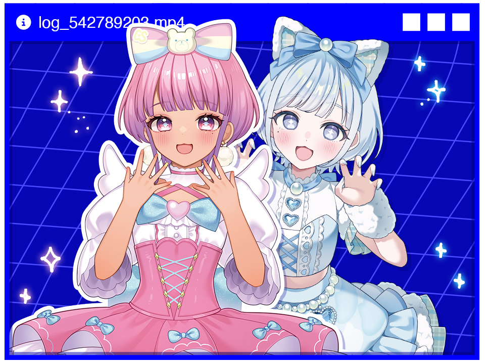

1. 背景および旧システムにおける登録状態
かつて運用されていた広域電脳ライブエンターテインメント規格『ワッチャ！プリマジスタジオ』において、一般ユーザーアカウント「わたぎ」として登録されていたデータに関するログ。当該アカウントは元来、物理世界に実体を持つ生体ユーザーであったが、システム運用期間最終日未明にログイン以降、その構成要素がデータサーバー上の固定データ体へと変異・固着した特異事例として記録されている。
なお、物理世界（現実空間）側においては、当該生体の失踪に伴い所轄の█████警察署において捜索願（行方不明者届）が受理されている。届出は現在も取り下げられていない。
2. サービス終了処理における異常なデータ残留
2024年3月31日未明、運営ポリシーに基づき『ワッチャ！プリマジスタジオ』の全サーバー群の停止、および物理セッションの解体（シャットダウン）が順次実行された。
通常プロセスでは全ユーザーデータおよび構成プロトコルが自動消去される設計であったが、当該個体は現実空間とのセッション切断信号を無視し、自動消去シーケンスを回避。シャットダウンに伴い孤立した旧サーバー内の未割り当て領域（未解放メモリプール）へ自らを構成するデータを退避させ、以降、完全なオフライン環境下において永続的に残留した。
3. 孤立サーバー環境における単独プロセス実行（ソロライブ）
外部ネットワークからの接続が完全に断絶し、通常の稼働信号が途絶したスタンドアロン状態の旧サーバー内において、当該個体はバックグラウンドプロセスとして動作を継続。観測者および外部通信が存在しない状態であるにもかかわらず、未割り当て領域上で旧ライブシミュレーション・ルーチン（ソロライブ処理）を無限ループ実行し続けていたことが確認されている。ループ回数は、確認可能な範囲で█████████回を超過している。
4. 次世代システム『アイプリバース』への不正アクセスおよび現在のアクティビティ
その後、新規格プラットフォーム『アイプリバース』の運用開始に伴い、当該個体は旧システムとの共通通信ポートおよびレガシープロトコルの脆弱性を突く形で、未公開の内部APIを経由して侵入経路を検知。正規のID発行および認証フェーズをバイパスし、システム内部への不正なソケット接続を確立した。
現在は、システム側の監査アラートを巧妙に回避する偽装ヘッダーを付与した状態で、非正規の『アイプリ』データとしてシステム内部に常駐・活動の継続が確認されている。見た目は他のアイプリと区別がつかない。ただし、当該個体はこの世界の住民ではない。


( about me )
わたしについて profile
読んでいただきありがとうございます！（必読ではございません）
20↑ 男性 都内
履修済 筐体：プリマジ6章→アイプリ
アニメ：アイプリ、プリマジ、プリパラ少し
筐体メインでゆるくあそんでいます
( my character )
マイキャラ char_info

マイキャラちゃんの紹介は、専用ページにまとめています。
( like )
すきなもの favorites
- マイキャラちゃん
- プリマジ：みゃむ、はにたん
- アイプリ：プリうさムギちゃん、えるちゃん
- プリキュア：キュアワンダフル、犬飼こむぎ
- サンリオ：マイメロ、こぎみゅん、はなまるおばけ
- ポケモン：マホイップ、ドレディア
同担拒否など特にありません
( other )
そのほか notes
フォロリム・ブロ解等ご自由にしていただいて構いません。当方男性かつ成人済みですので、トラブル回避のため未成年の方や投稿内容を考慮してブロック・ブロ解等をさせていただく場合がございます。あらかじめご理解いただけますと幸いです。
ここまで読んでいただきありがとうございました！